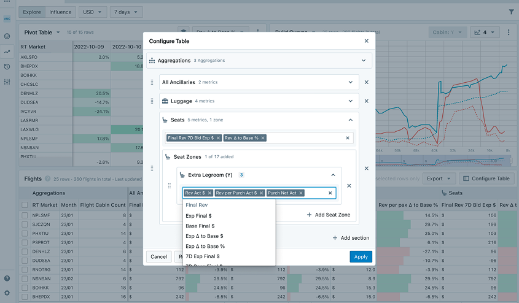

Phase 1: analysis
Most of the interaction design was disjointed
Take a look at the visualization below. Changing the contents and drilling down on the data in the table is an ongoing task for the airlines’ analysts. Therefore, the method should be intuitive and fast. The analysis, as shown in the visual, is not efficient; on the contrary, it requires the user to move back and forth over the table.

Phase II: solutions
Restructuring
The approach shown above was clearly not going to work. Modals can be used for initial setup, but they are not suitable for overly complex actions. Even if it did work, it would still be preferable to handle these actions locally, allowing you to get what you need immediately.

The tables in FLYR’s interface are quite large and need to be customizable by the user. If customization options are hidden away, they become difficult to find, making table adjustments counterintuitive. When FLYR began adding more data to the tables, such as “year on year” metrics, the design team sought a more straightforward way to adjust the tables. We determined that using a modal was not the solution.

Adding sections
This approach allowed the user to insert sections right where they needed to be. This way you get to your results faster and see your potential mistakes faster, too.Adding aggregations + metrics
Not all design proposals could be implemented immediately, but internally showcasing and sharing them led to an understanding of the initial approach we discussed. The design team also provided a solution that could be implemented right away, allowing the new feature to be simply 'slid in'. However, such a more thorough design exercise leads to a shared north star, so that Product and Engineering understand the vision.Phase III: testing
Improving UX cannot mean saying “no” to product owners. As a designer, you might believe that the changes need to be handled differently and more robustly. Better design is achieved collaboratively. So, if the product owner has a request, we deliver it regardless. Additionally, two things would be desirable: an example of the design as the Design team would ideally create it and user research that supports it. In this design, we knew that an alternative design wouldn’t be built due to resource shortages.
However, the request pushed the design in an undesirable direction: continuing in this manner would reduce intuitiveness. You can say as much, but that’s not sufficient. We needed an example and input from users. We shared the above design with users, who found it more intuitive. We shared it with Product as a form of North Star, to show the direction we wanted to head. This fit into a larger puzzle of partial designs that together formed a version of the platform that Design understood couldn’t be built now – but would function as a point on the horizon that everyone agreed upon.